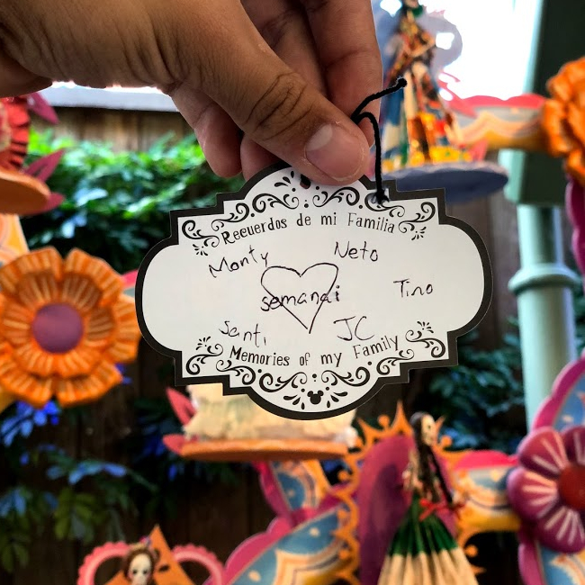

¡Conoce a los Pelifrutis!
| Integrante | Foto |
|---|---|
| Carla (Portafolio |
|
| Santiago Alcérreca De la Viña (GitHub) |
 |
| Aldo Turégano Montes (LinkedIn - GitHub) |
Fortalezas
| Carla | Santiago | Aldo |
|---|---|---|
| Experiencia en diseño gráfico | Curiosidad | Lealtad |
| Creatividad | Perseverancia | Pensamiento Crítico |
| Entrega y compromiso | Comunicación efectiva | Compromiso |
| Capacidad crítica | Honestidad |
Definición del Tema:
Según un artículo del sitio web “GuíaInfantil” publicado en el 2019 por la psicopedagoga María José Roldán, los niños entre 2 y 4 años pasan por una etapa de extremo egoísmo y egocentrismo derivado de la incapacidad de comprender el mundo que los rodea llevándolos a adoptar un comportamiento a veces violento con rabietas y llanto. (Roldán, 2019) Es por esto que decidimos centrar nuestra problemática al tema de la inclusión.
Investigación de la Problemática:
- What: El egocentrismo, según la página de internet “definicion.de”, se entiende como la tendencia al ser humano de centrarse en su propio ego (o comúnmente denominado el “yo”) lo cual supone una exagerada exaltación de la personalidad propia y por ende que el sujeto centre su personalidad o su persona como el centro de atención (N/A, 2013).
- Who: Aunque el problema del egocentrismo (que en sí genera otros problemas como la discriminación y la falta de inclusión) está presente en personas de todas las edades, queremos centrarnos específicamente en niños y niñas de México. Esto debido a que ellos tienen una capacidad de aprendizaje impresionante, que obtienen a través de la experimentación intuitiva, un proceso muy parecido a los razonamientos científicos (Cook, Goodman & Schulz, 2011). Además, está comprobado que el ambiente escolar es el contexto ideal para desarrollar relaciones con personas distintas a nosotros mediante el respeto, la tolerancia y la empatía, creando así un entorno con diversidad (Mosquera, 2018).
- Where: Uno de los primeros lugares en los que el niño adquiere actitudes egocéntricas o intolerantes además de la escuela -como ya se mencionó-, es el hogar y durante las actividades familiares (Hernández, p.10). Debido a esto, es muy importante tener una herramienta móvil y accesible para los niños en todo sitio, con la que ellos, padres de familia, amigos, etc. puedan interactuar en conjunto en los lugares con mayor influencia en el comportamiento.
- Why: Vivimos en un mundo en constante cambio y en creciente intercomunicación, en el que cada vez hay más diversidad social e ideológica y donde la interacción con “otros” es inevitable, por lo que el egocentrismo resulta ser una barrera para el desarrollo personal y social. Si le enseñamos a niños y niñas desde una edad temprana a cohabitar con aquellos que son diferentes, aceptarlos e incluirlos, podremos combatir la discriminación y los conflictos futuros causados por el egocentrismo, que deriva de la intolerancia y exclusión. Weidenfeld (2002, p.101) asegura que la tolerancia es posible de enseñar y resalta que se deben desarrollar métodos para hacerlo. Por eso es vital inducir conductas inclusivas y tolerantes en los niños a partir de un medio cercano y comprensible para su edad: los juegos.
- When: Esta problemática será abordada en un lapso entre el 2015 a la fecha (2020) debido a que como lo asegura la página web (Web del Maestro CMF), el uso excesivo del teléfono celular en niños pequeños forza al cerebro a una sobrestimulación provocando un incremento en la irritabilidad de ellos junto con otros factores negativos.
- How: Uno de los problemas más graves que ha existido en nuestro país desde hace décadas o siglos ha sido la discriminación hacia personas diferentes a uno mismo. Ya sea por edad, sexo, religión, contexto socioeconómico, raza, color de piel o nacionalidad, esta falta de tolerancia e inclusión desmantelan la idea de poder fomentar una sociedad diversa y de sana convivencia (Soberanes, 2010). La situación se traduce posteriormente al condicionamiento del acceso a la educación, la salud y la vivienda de calidad, sin mencionar las oportunidades de empleo, bienestar social e ingreso económico que podrían llegar a tener (De María y Campos, 2018). Es lamentable que nuestra sociedad se encuentre en este estado en donde las diferencias se acentúan, en lugar de encontrar nuestros rasgos comunes. Es por esto que queremos afrontar el problema al inculcarle la importancia de la diversidad a niños de corta edad, y lograr que la tolerancia sea realmente practicada en México, y no sólo referida (Frías, 2019).
Referencias:
- Weidenfeld, Werner (2002), "Constructive Conflicts: Tolerance Learning as the basis for democracy", Prospects, núm. 1, vol. 32, marzo 2002, The International Bureau of Education of the United Nations Educational, Scientific and Cultural Organization, Kluwer Academic Publishers B.V.
- N/A. (2020). Enfermedades que los celulares provocan a los niños y los padres desconocen. 02/07/2020, de Web del Maestro CMF. Sitio web: https://webdelmaestrocmf.com/portal/alerta-padres-estas-son-las-enfermedades-que-celulares-provocan-a-los-ninos-y-no-lo-sabes/
- N/A. (2013). DEFINICIÓN DE EGOCENTRISMO. 02/07/2020, de Definicion.de Sitio web: https://definicion.de/egocentrismo/
- Roldán, M.J. (2019). La etapa del egocentrismo en los niños. 02/07/2020, de GuíaInfantil Sitio web: https://www.guiainfantil.com/articulos/educacion/conducta/la-etapa-del-egocentrismo-en-los-ninos/
- Nuevo, M. (2016). La capacidad de aprendizaje de los niños. Recuperado el 3 de julio de 2020, de GuíaInfantil. Sitio web: https://www.guiainfantil.com/blog/educacion/inteligencia/la-capacidad-de-aprendizaje-de-los-ninos/
- Mosquera, I. (2018). La inclusión en el aula y el valor de la amistad: un tándem ganador. Recuperado el 3 de julio de 2020 de la Revista de la Universidad Internacional de la Rioja. Sitio web: https://www.unir.net/educacion/revista/noticias/la-inclusion-en-el-aula-y-el-valor-de-la-amistad-un-tandem-ganador/549203631434/
- McIvor, C. (2011). Learning by experiment is all in a day’s play. Recuperado el 3 de julio de 2020 de Nature International Weekly Journal of Science. Sitio web: https://www.nature.com/news/2011/110726/full/news.2011.442.html
- De María y Campos, M. (2018). Los desafíos de la discriminación y la inclusión en México - Jóvenes y adultos mayores. Recuperado el 3 de julio de 2020 de El Financiero. Sitio web: https://www.elfinanciero.com.mx/opinion/mauricio-de-maria-y-campos/los-desafios-de-la-discriminacion-y-la-inclusion-en-mexico-jovenes-y-adultos-mayores
- Cook, C., Goodman, N. & Schulz, L. (2011). Where science starts: Spontaneous experiments in preschoolers’ exploratory play. Cognition, 120 (2011), 341-349.
- Soberanes, J. (2010). Igualdad, discriminación y tolerancia en México. Recuperado el 3 de julio de 2020 del Instituto de Investigaciones Jurídicas de la UNAM. Sitio web: http://www.scielo.org.mx/pdf/cconst/n22/n22a9.pdf
- Frías, L. (2019). La tolerancia, muy referida y poco practicada en México. Recuperado el 3 de julio de 2020 de la Gaceta UNAM. Sitio web: https://www.gaceta.unam.mx/la-tolerancia-muy-referida-y-poco-practicada-en-mexico/
- Hernández, Ingrid (2004) Educar para la tolerancia: una labor en conjunto, Revista Mexicana de Ciencias Políticas y Sociales, vol. XLVII, núm. 191, pp. 136- 148.